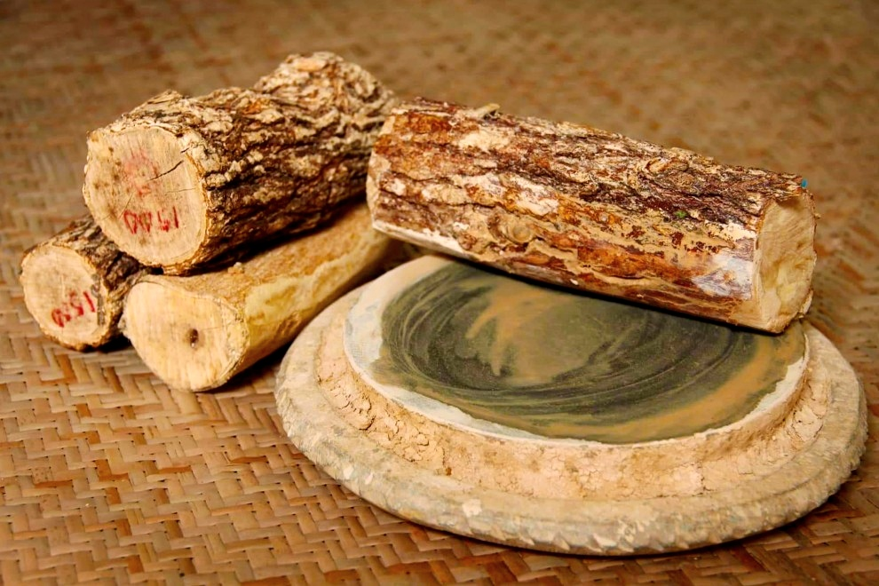

ミャンマータナカ

ミャンマータナカについて説明します。
ミャンマーのじょせいは 2,000 年まえからタナカを化粧品としてしよしてきました。
タナカの木はねったいちいきにはえました。
ぞれで ミャンマーの中央部でしょう業てきで栽培されます。
タナカはあまいかおりがしますあと 肌に乗せると清涼感もあるです。
タナカはミャンマーの赤ちゃんからお年寄り、 女性でなく、 男性も、 強 い日差しからお肌を守っているのに使用します。
彼らはタナカを化粧品として開発、生産しています。
ミャンマータナカはミャンマー人にとって重要な文化です。